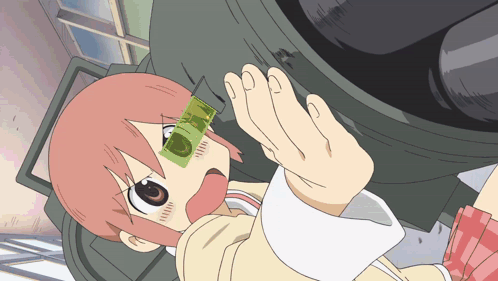

Games
Mods
I definitely do make mods sometimes, I will post them here when I make them.
These are my video games! I love making them and I definitely love seeing how much people love them aswell!
I definitely have a problem with burnout, and I will have to somehow fix that someday, but it is still something I enjoy! The feeling of others enjoying your games is too addicting
(My most favourite genre to make and play are shooters)